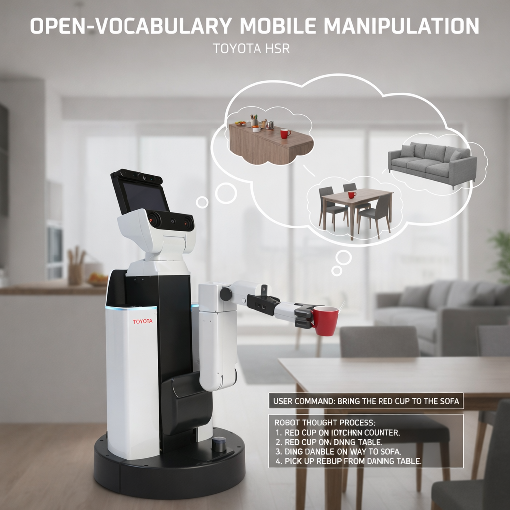
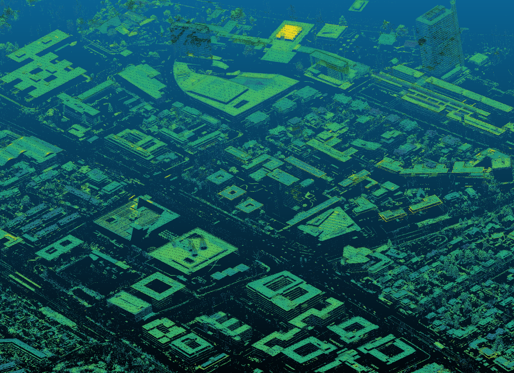
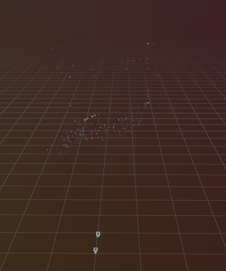
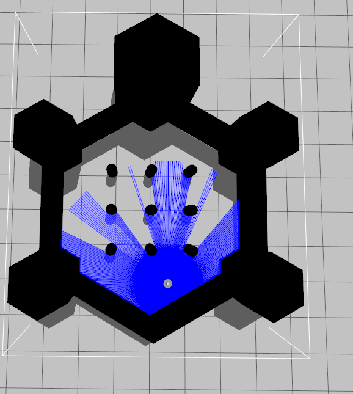

Projects
Robotics, vision, and perception. Mostly built from scratch in C++ and Python.

Language-conditioned grasping on the Toyota HSR. Scene graph built from iPad scan data, Dockerised inference containers communicating over HTTP, and a two-phase geometric → AnyGrasp pipeline. Pure-Python core with ROS 2 as a thin adapter.

Streaming point-cloud processing across a 10 km Bonn corridor (ALS + MMS, EPSG:25832). GPU tensor ops via Open3D, ground filtering, quasigeoid correction, and parallel tiled processing for heterogeneous hardware.

Incremental Structure-from-Motion for unordered photo sets. SIFT extraction, ratio-test matching, RANSAC essential matrix, pose recovery, triangulation, and bundle adjustment. Documented as a math-paired blog series.

Filter-based SLAM framework with abstract base classes, a clean Python core, and a thin ROS 2 wrapper. 25-test suite covering prediction, update, and data association. Documented after Thrun et al., Probabilistic Robotics.

Autonomous mobile robot that detects and chases a coloured ball using real-time HSV segmentation and a PID velocity controller published to ROS 2 topics, simulated in Gazebo.

Modular inverse-kinematics framework benchmarking gradient descent, SLSQP, and damped least-squares solvers across reachable and near-singular configurations.

Internet-based teleoperation of TurtleBot3 using an MQTT broker bridged into ROS 2 publisher/subscriber nodes, with sub-80 ms observed latency over the public internet.
More unfolding. follow the build log →